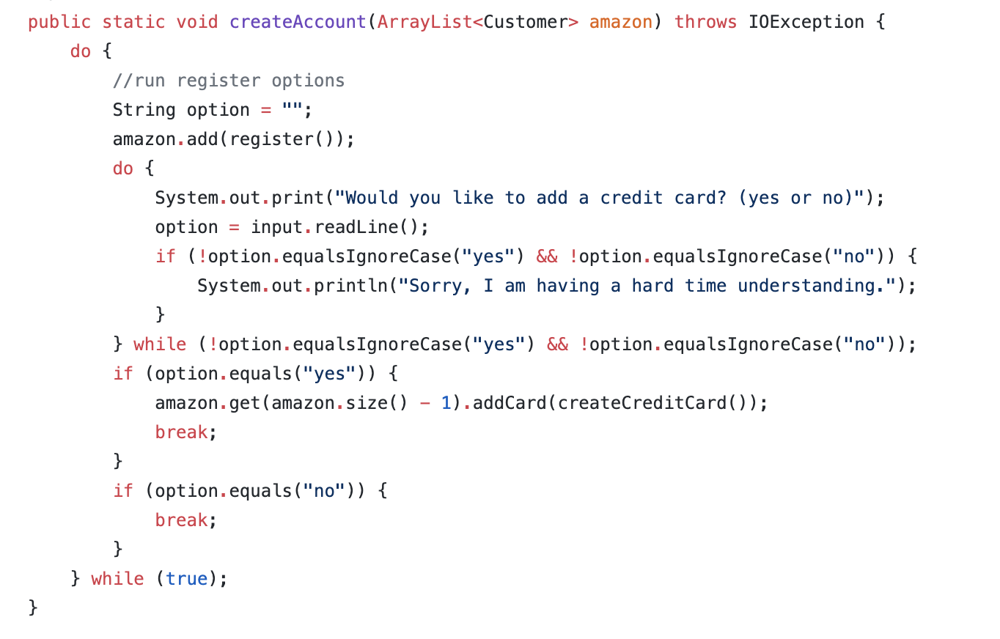
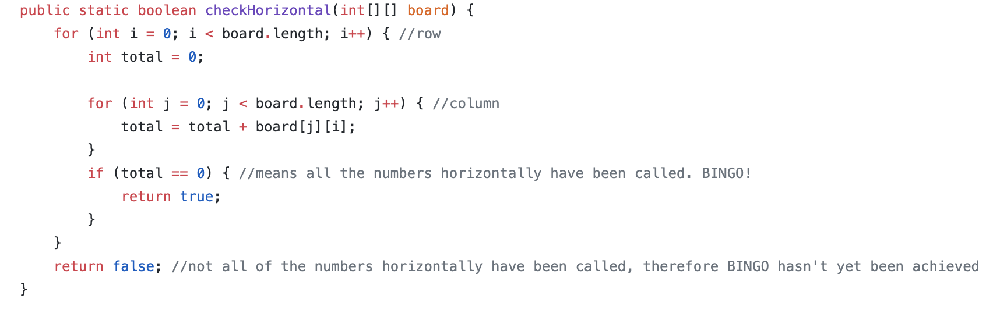
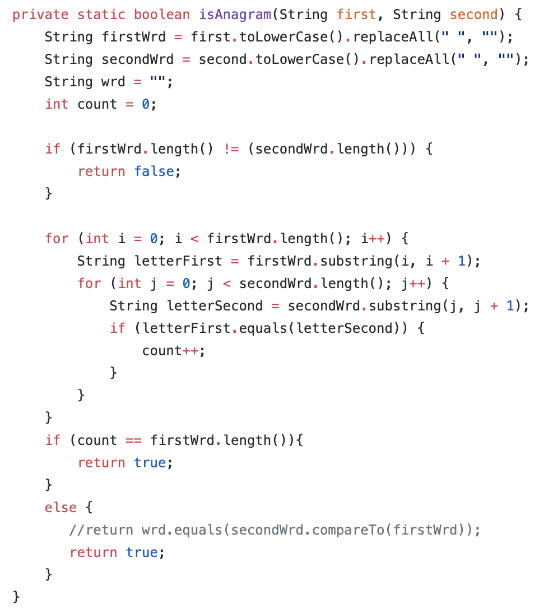
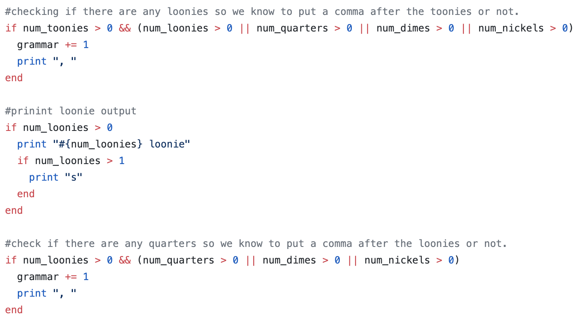
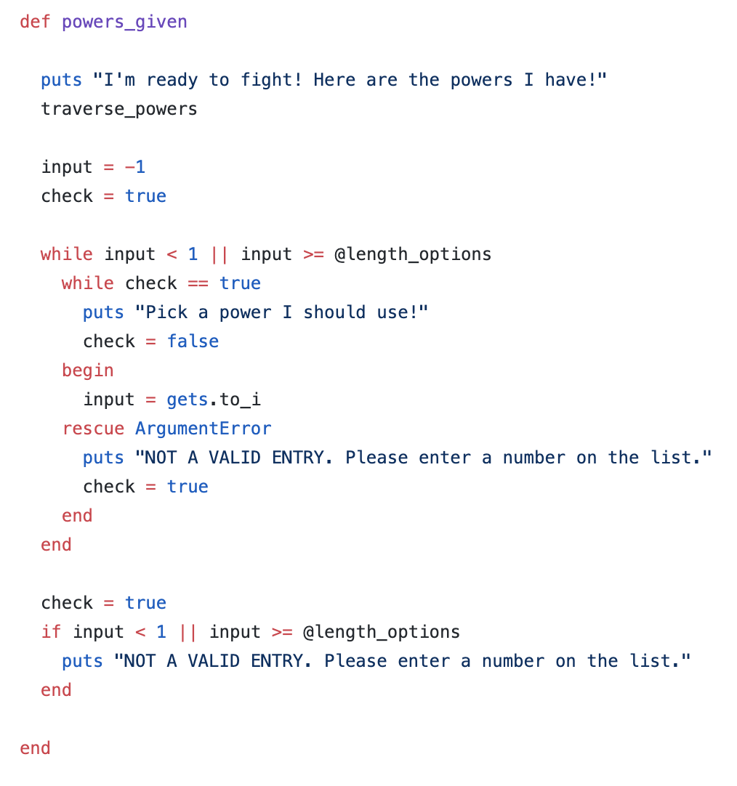
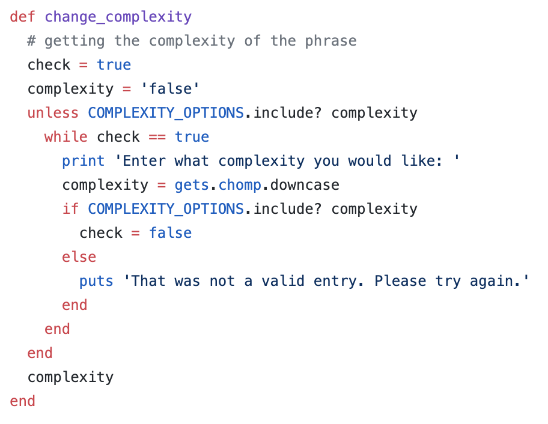

Throughout the past few years I have programed several different things. The first time I learned how to program, it was done in Java through Ready To Program; a software developmetnt system from the 1980s. In this IDE, I created several small applications, as well as a larger application of a maze game, which was designed and developed by myself and three other people. After getting the hang of things, I later progressed to developing programs wrtten in Java through the Netbeans 8.2 IDE. Later, my creativity got the better of me as I decided to teach myself Python and Turtle graphics, and began developing small applications in the Pycharm IDE. I developed a program that I called "Space Games", which was a game with options of the user playing Space Invaders or Space Wars; two very popular games from the 1970s. In this application, I developed different levels of each game for the user to increase or decrease their difficulty level.
Space Invaders Space WarsAfter beginning university, my knowledge of programming languages only increased. I now have experience in Ruby and have programmed several small-scale applications in this language through the Visual Studio Code IDE. I have also gained knowledge in Hypertext Markup Language (HTML), Cascading Style Sheets (CSS), and Javascript (JS), which have allowed me to create the website you are on right now. With these newly obtained skills, I have been able to create much more innovative programs than ever before.
Have some knowledge in Java Graphical User Interface (GUI) as well as the Python Turtle library and some Pygame.
Last year I created an application to simulate Amazon. In this project, users were prompted to create an account. If they already had an existing account, they can log in and see their previous transaction history as well as complete more. When logging in, if the user is creating a new account, they are prompted to enter their password twice and the password must reach certain requirements (the length and at least one capital letter). If these requirements were not met, the user was reprompted. The user is asked to verify their password, and if their verification is wrong, they are reprompted, once again. In addition, if the user attempts to log in with an invalid account, they are reprompted for a valid login. When logged in, the user can browse through products, add things to their shopping cart, and purchase the items. The user is prompted to enter their credit card information as well as the billing and shipping address.
This program was created to have a computer-simulated BINGO game. The computer goes through values and checks for if BINGO has been met. It continues to do this until the game is over.
This small application is to check if the word entered by the user is an anagram. By definition, an anagram is a word, phrase, or name formed by rearranging the letters of another, such as cinema, formed from iceman.
Cash Money the first project I created after starting at Shopify. In this project, the user enters an amount and the amount of change to be dispensed is displayed.
In this project, there was much freedom in what would be created. I created a game that is people vs cars. Each person has different powers and weaknesses, as does each car. When playing, the user enters what power they would like to use. Based on the powers chosen, the opponents health attributes will lessen or increase. Whichever reaches a health level of zero or below (the person or the car) looses.
This project was the first team project I have built at Shopify. In this application, the user can choose which level of difficulty they want and what length of phrase they would like to use to practice their typing skills. Their skill level is monitored throughout them typing, and based on how fast and accurate they are, they may be prompted to increase or decrease a level. Additionally, the user's top score is kept, and their score history is kept track of. Finally, the user can also choose how many phrases they would like to practice in a row, so instead of being prompted after every phrase if they would like to type another, another phrase is automatically loaded.
Here is a link to my Github. You can take a look at some of my pervious projects there!